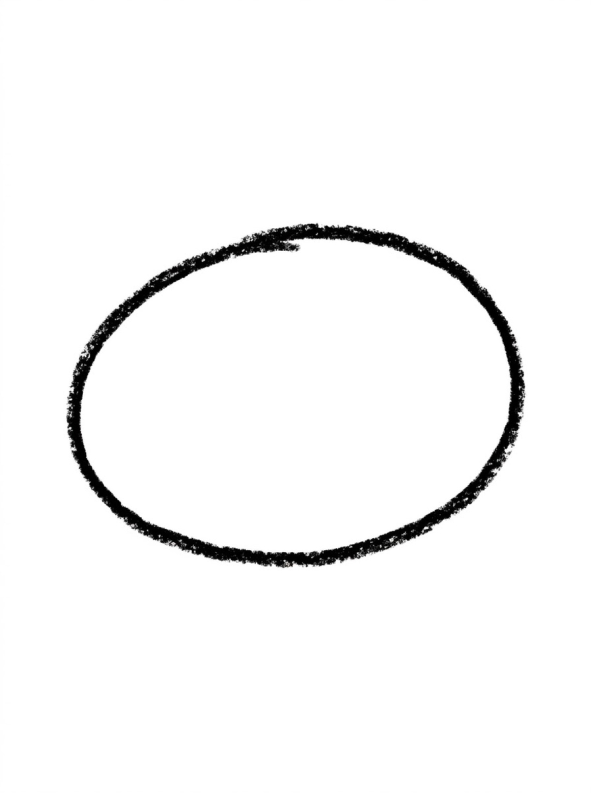
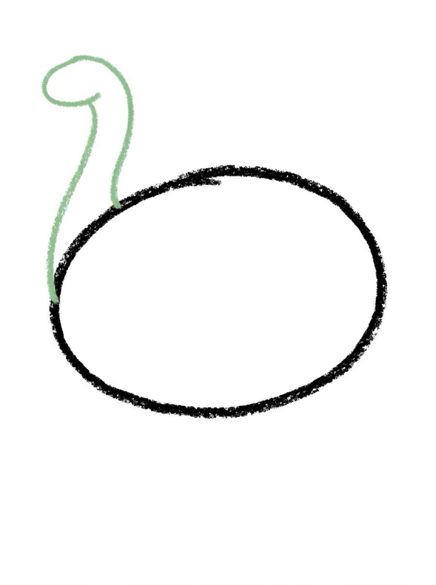
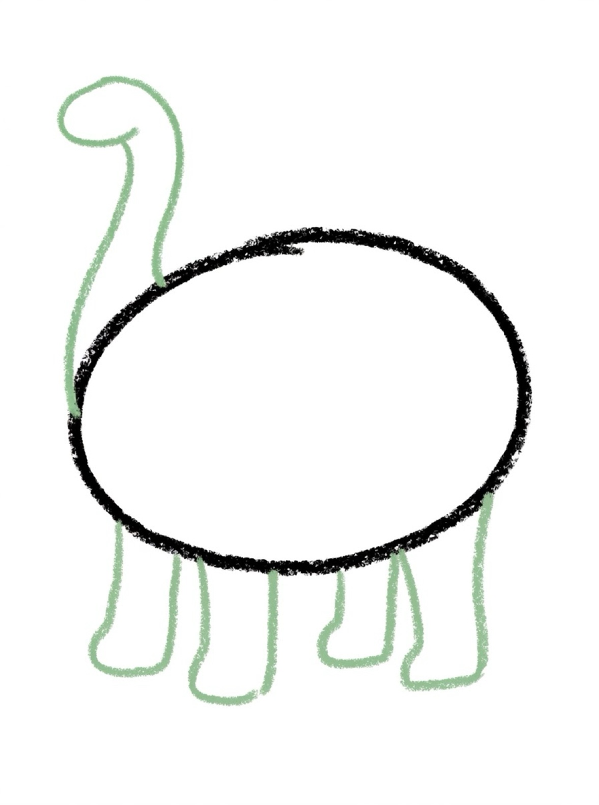
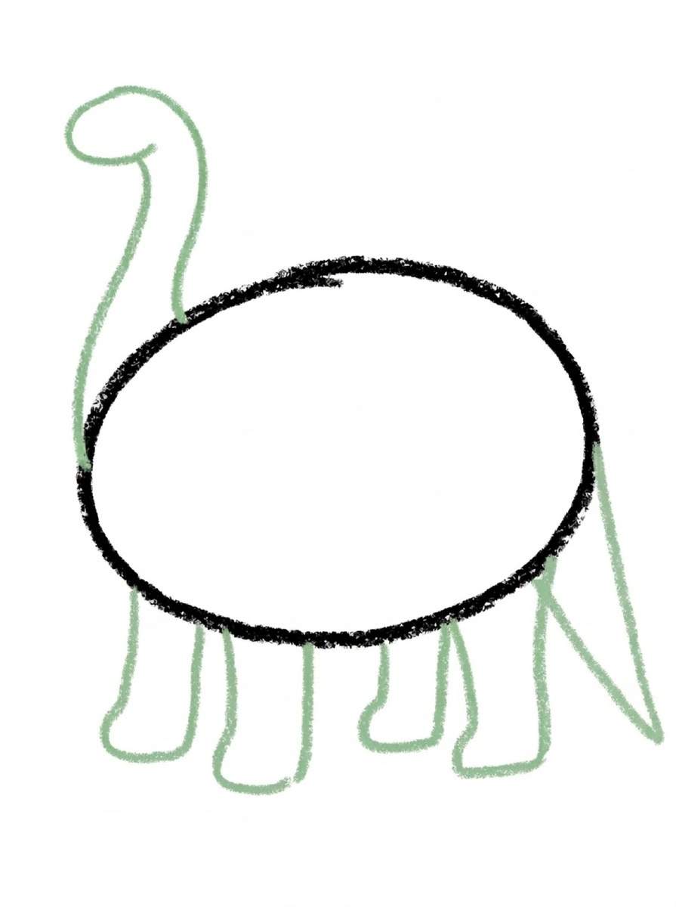
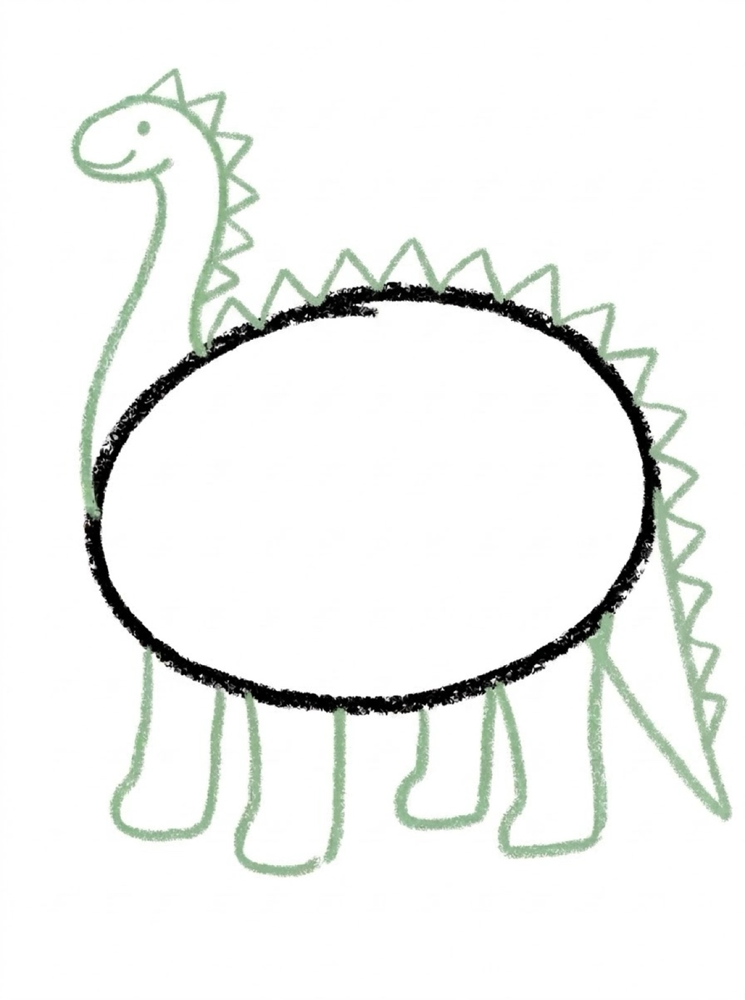

Dinosaur Drawing for Kids How to Draw a Dinosaur in 6 Easy Steps
Quick Answer
This free step-by-step tutorial shows kids how to draw a dinosaur in six easy steps: a big oval body, a long neck with head, sturdy legs, a tail, back spikes, and color. Download the printable PDF, grab crayons, and follow along together. Made for ages 5 and up — no signup needed, just print and draw.
At a Glance
- Subject: How to draw a dinosaur
- Ages: 5+
- Steps: 6 steps
- Time: ~15 min
- Difficulty: Easy-Medium
- Supplies: Paper, crayons
Every kid goes through a dinosaur phase, and drawing one makes it last longer. This friendly brontosaurus-style dino is all ovals and triangles — no scary teeth required. Gentle giant energy only.
✏️ How to Draw a Dinosaur: Step by Step
One step per box — draw each new part in a different color so kids can see exactly what changed.
Step 1: The Big Body

Draw a big sideways oval for the dinosaur's body — the biggest shape on the page.
Step 2: Long Neck and Head

Draw a long curved neck rising from the front of the body, with a small rounded head on top.
Step 3: Sturdy Legs

Draw four thick column legs under the body — dinosaurs need strong legs.
Step 4: The Tail

Draw a long triangle tail stretching out behind the body, getting thinner toward the tip.
Step 5: Spikes and Face

Add triangle spikes along the back and neck, plus a dot eye and a smile.
Step 6: Color It In

Color it green with a lighter belly — or make a purple dinosaur, no rules!
📊 Dinosaur Drawing by Age
Every age can join in — just adjust the job.
| Age | What they can do | Tip |
|---|---|---|
| 3–4 | Trace the big oval body and color it | The long neck is hard — draw it together hand-over-hand |
| 4–5 | Draw the body, neck, and legs with help | Count the spikes together as you add them |
| 6+ | Draw the whole dinosaur solo | Challenge: draw a baby dino next to the big one |
🖨️ Download Your Free Dinosaur Drawing Printable
The printable lays out all 6 steps one per box, big enough for little hands — kids draw right alongside each step.
⬇️ Open Free Printable 🖨️ Print🎁 Free printable for ages 3+
🦕 Prehistoric Diorama
Draw your dinosaur in a prehistoric landscape — triangle mountains, a volcano with red lava, giant fern leaves. The setting turns a single animal into a whole world. Kids who love dinosaurs will happily spend 30 minutes on the background alone.
🦕 Dinosaur Brontosaurus Drawing
The dinosaur tutorial on this page builds a friendly brontosaurus-style dinosaur — long curved neck, small rounded head, four sturdy legs, long tail, and triangle spikes along the back. If you're looking for a dinosaur drawing, this page is it.
Here's the pattern for the brontosaurus drawing in 6 steps: big oval body, long curved neck, small rounded head, four sturdy legs, long tail, and back spikes. The same 6-step pattern adapts to a T-Rex or a triceratops — just change the head shape, arms, horns, and tail length.
For kids who want to turn their dinosaur into a fierce dinosaur T-Rex drawing, the teeth are everything. Big triangle teeth in a wide-open mouth is what makes a T-Rex look like a T-Rex. And remember: a T-Rex with a smile is still a T-Rex. There's no wrong way to draw one. For a cute dinosaur, the face does it: big round eyes and a tiny smile.
What You'll Need to Draw a Dinosaur
Green is the go-to, but dinosaurs can be any color — purple and blue dinos are very popular with kids. The bumpy back plates or spikes need careful triangle work. A darker shade for outlines helps the dino stand out. Big paper is better here; dinosaurs deserve to be drawn LARGE.
What They're Learning
Dinosaurs combine big shapes (body, head) with small details (spikes, claws, teeth) — managing both scales on one drawing is a real planning challenge. The long neck and tail (extended curves) push kids beyond compact shapes into elongated forms. It's also a great lesson that you can invent details — nobody knows exactly what colors dinosaurs were.
Make It Yours
Add spikes along the back for a stegosaurus look, or a long neck for a brontosaurus. Draw a volcano erupting in the background, palm trees for the prehistoric landscape, or a baby dino hatching from an egg. Footprints trailing behind the dinosaur tell a story about where it's been. A whole herd at different sizes is an impressive fridge piece.
🛒 Our Favorite Drawing Supplies
These are the supplies we reach for in our own home — washable (because kids), quality paper, and enough colors to avoid fights.
As an Amazon Associate, MomYouNeedThis earns from qualifying purchases — at no extra cost to you.
❓ Dinosaur Drawing FAQs
What is the easiest way for a kid to draw a dinosaur?
Draw a big sideways oval for the body and a long curved neck with a small head rising from the front. Add four thick legs, a tapering triangle tail, triangle spikes along the back, and a smiley face. Ovals and triangles — gentle giant, no scary parts.
What age can kids start learning to draw a dinosaur?
Most kids can manage the big shapes around age 5 with help, especially the long neck. Younger kids can trace the body oval and focus on coloring and spikes.
What supplies do we need to draw a dinosaur?
Paper and crayons or markers — green is classic, but purple dinosaurs are fully allowed. The free printable PDF lays out all six steps one per box so kids can draw right alongside each step.
Is the dinosaur drawing printable really free?
Yes — every printable on MomYouNeedThis is 100% free to download and print. No signup, no payment, just tap the download button.
Does this page teach a dinosaur brontosaurus drawing?
Yes! The dinosaur tutorial on this page teaches a friendly brontosaurus-style dinosaur drawing in 6 easy steps: big oval body, long curved neck, small rounded head, four sturdy legs, long tail, and triangle spikes along the back. Follow the steps in order for a finished brontosaurus drawing. The free printable PDF lays out all six steps one per box.
How do I print the dinosaur drawing tutorial?
Open the PDF and print at 100% scale (not 'fit to page') so the drawing boxes stay big enough for little hands. The printable is designed to stay large — never shrunk to force a fit.
What is the easiest dinosaur drawing easy for kids?
The easiest dinosaur drawing easy is a brontosaurus: one long horizontal oval body, a circle head on a long neck, four stubby legs, and a tail. This dinosaur drawing easy method uses six steps and basic shapes, so kids as young as three can follow it.
How does a step by step easy cute dinosaur drawing work?
A step by step easy cute dinosaur drawing shows the full dinosaur so far at each step, with only the new part highlighted. The cuteness comes from big round eyes and a tiny smile. This step by step easy cute dinosaur drawing method is used in the six-step tutorial on this page.
How do kids make a dinosaur T-Rex drawing from this tutorial?
Start with the body shape from the six steps on this page, then stand it up on two strong back legs, add two small arms, make the head bigger, and draw big triangle teeth in a wide-open mouth. That turns the friendly long-neck shape into a dinosaur T-Rex drawing kids recognize right away.
📚 Keep Exploring
- ✏️ All 53 Drawing Tutorials 53 free step-by-step drawing tutorials for kids.
- 🐾 Animal Coloring Free printable animal coloring pages for little learners.
- ✏️ Drawing Practice Free printable drawing pre-writing worksheet for toddlers.